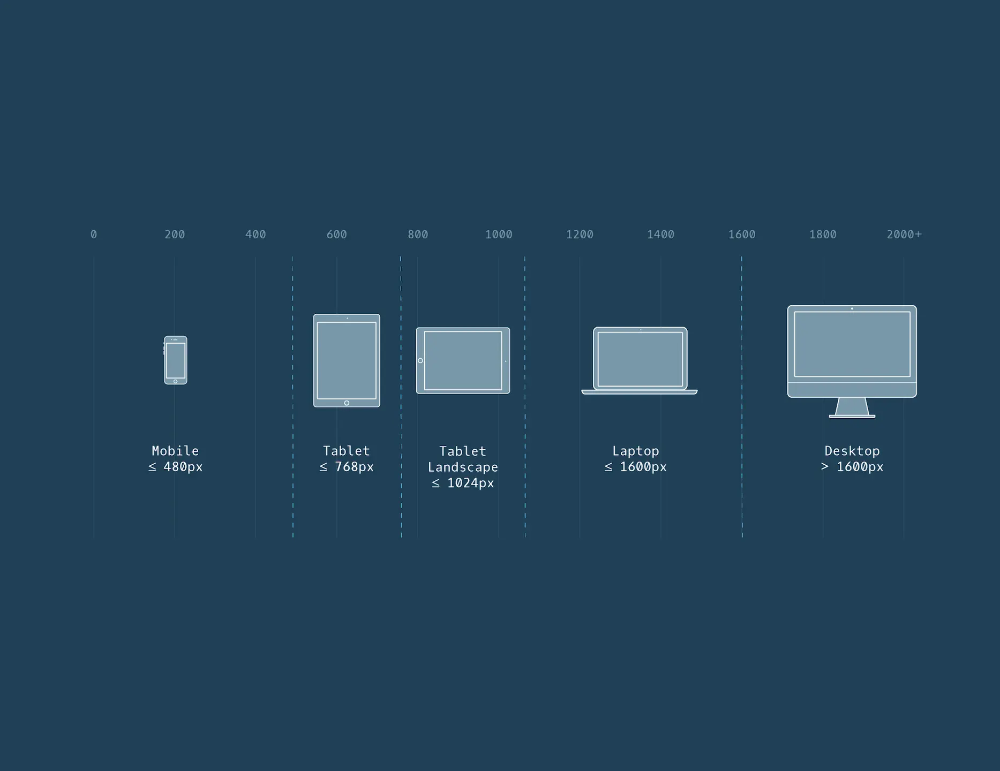

Responsive Design
This project is about rasponsive design, conditional styling and fluid typography. Here i went through styling responsive via media queries, fluid typography and making the product work on most screen sizes.

Responsivenes
As any website, this project was about being responsive. Getting the layout to work on all devices and screens. For this process to be perfect, alot more time adn effort should be put into it. The project was about getting into the habbit of responsive coding.

Contitional styles and more
Conditional styling is all about changing and tweaking the layout, ever so slightly so it fits a range of screen sizes. In this project i utilized flexbox, css grid, and mediaqueries. For future work on this project, i would implement fluid typography, wich sets the font sizes fluidly according to screens sizes.